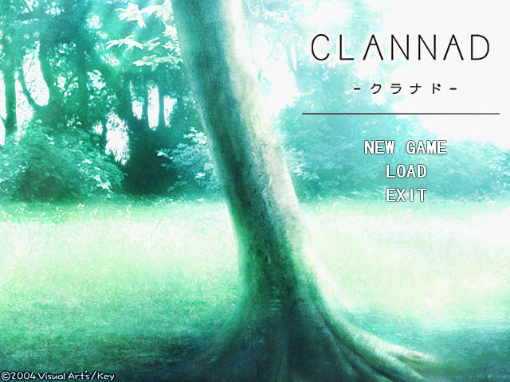
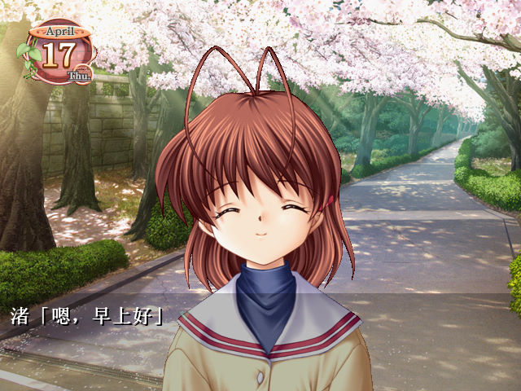
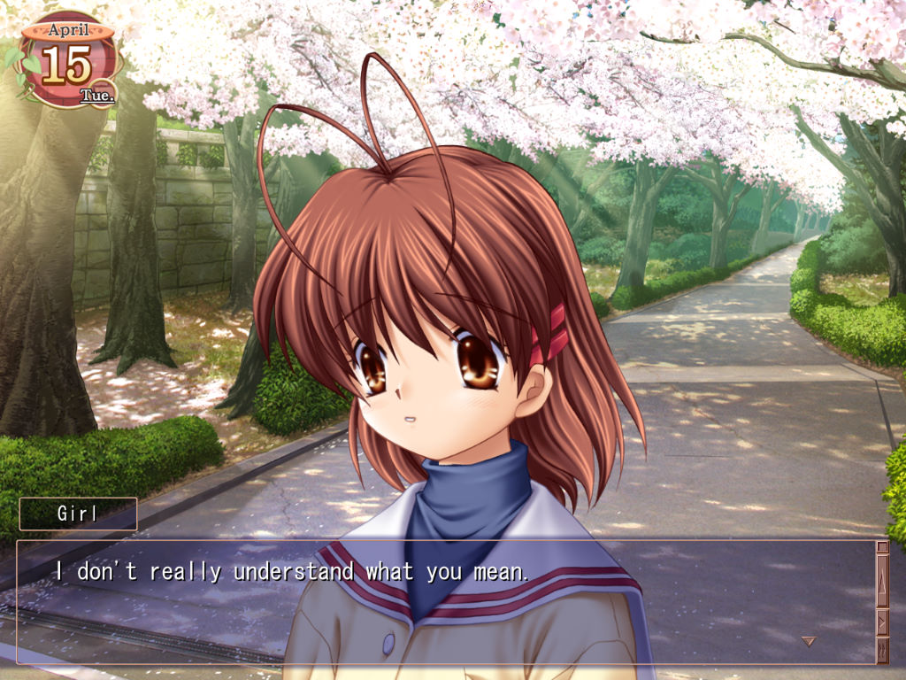

名稱：純愛學園 (Clannad，簡中／英文版) 簡介：日本Key 2004年出品的戀愛故事閱讀遊戲，最初只有日文版，2015年推出英文HD版 [待補]。    備註：本版為Key Fan Club 2005年的KFC1000 Edition（千日特別版）簡中漢化版 保護：無 限制：簡中漢化版只能在簡中系統上執行。 備註：簡中漢化版由4/17日開始，似乎只能玩一天，英文版則由4/15開始，其他差異不明。


